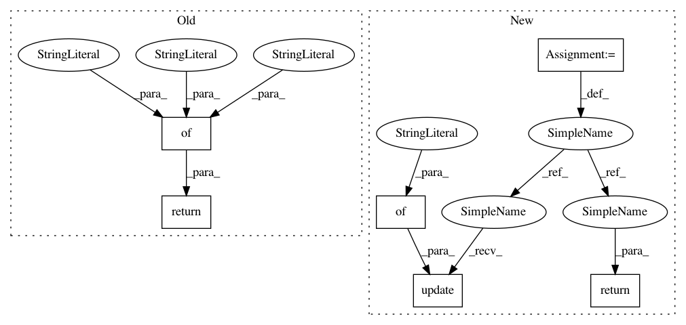

be24159959672c32abb31697e721d96ae6ffaf97,keras/wrappers/scikit_learn.py,BaseWrapper,get_params,#BaseWrapper#Any#,63
Before Change
params : dict
Dictionary of parameter names mapped to their values.
return {"model": self.model, "optimizer": self.optimizer, "loss": self.loss}
def set_params(self, **params):
Set the parameters of this estimator.
After Change
params : dict
Dictionary of parameter names mapped to their values.
"""
res = copy.deepcopy(self.sk_params)
res.update({"build_fn": self.build_fn})
return res
def set_params(self, **params):
"""Set the parameters of this estimator.
In pattern: SUPERPATTERN
Frequency: 3
Non-data size: 6
Instances
Project Name: keras-team/keras
Commit Name: be24159959672c32abb31697e721d96ae6ffaf97
Time: 2016-02-27
Author: ipod825@gmail.com
File Name: keras/wrappers/scikit_learn.py
Class Name: BaseWrapper
Method Name: get_params
Project Name: asyml/texar
Commit Name: d3a99695afb9a7e050ef00c37519b11432c5fa3f
Time: 2018-03-16
Author: zhitinghu@gmail.com
File Name: texar/data/data/text_data_base.py
Class Name: TextDataBase
Method Name: default_hparams
Project Name: keras-team/autokeras
Commit Name: cdbb8791ec13d03fd1fcf2580111db677a3ebc29
Time: 2019-12-15
Author: jhfjhfj1@gmail.com
File Name: autokeras/hypermodel/preprocessor.py
Class Name: FeatureEngineering
Method Name: get_config